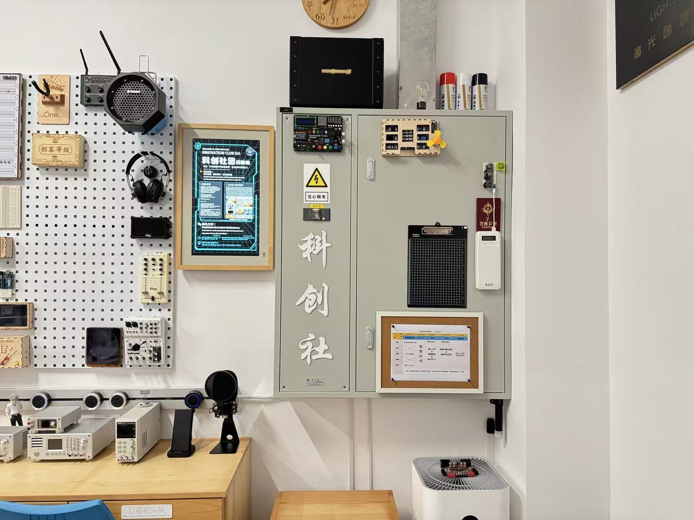
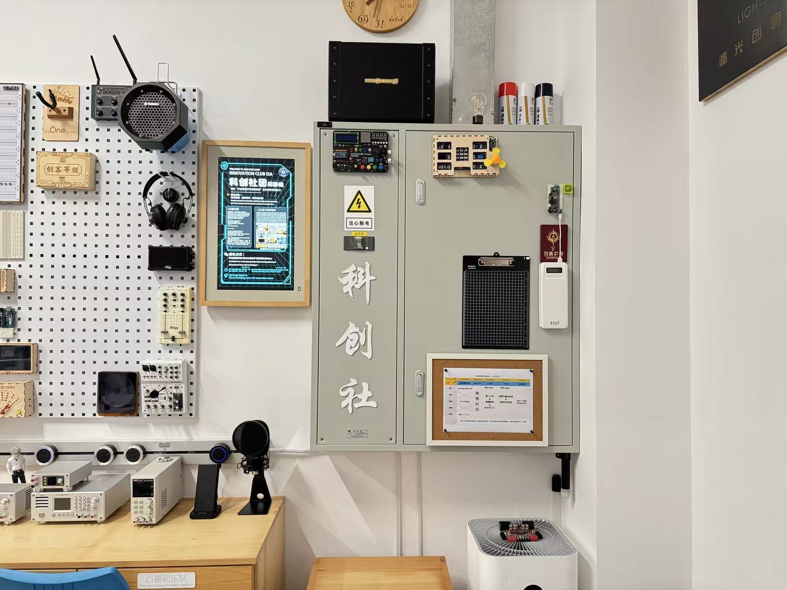

Welcome to Innovation!
We are a vibrant community of young innovators passionate about exploring the intersection of science, technology, and creativity.
.jpg) 

About Us
The ISA Liwan Innovation Community is founded on the principles of STEAM education and ISA's holistic learning philosophy. The STEAM approach integrates science, technology, engineering, art, and mathematics, encouraging students to develop critical thinking, creativity, and problem-solving skills.
Our community provides a platform for students to freely explore technological innovation, collaborate with like-minded peers, and turn ideas into reality.
Our Clubs
Maker's Club
A hands-on space for inventors and creators, focusing on engineering design, digital fabrication, and innovative projects such as 3D printing, laser cutting, and Arduino programming.
Flop Fish Band
A unique student band that blends music with technology, crafting self-made instruments and experimenting with the fusion of art, science, and sound.
Model Aircraft Club
A community for aviation enthusiasts who design, build, and test model aircrafts and drones, learning aerodynamics and control systems through hands-on projects.
Join Us!
Whether you're a passionate maker, a creative musician, or an aviation dreamer — you can always find something that inspires you here.
Join the ISA Liwan Innovation Community and become part of a movement that turns imagination into innovation!